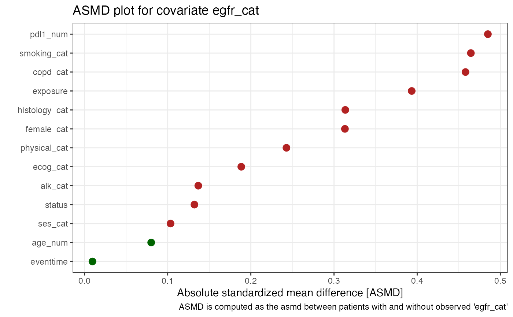
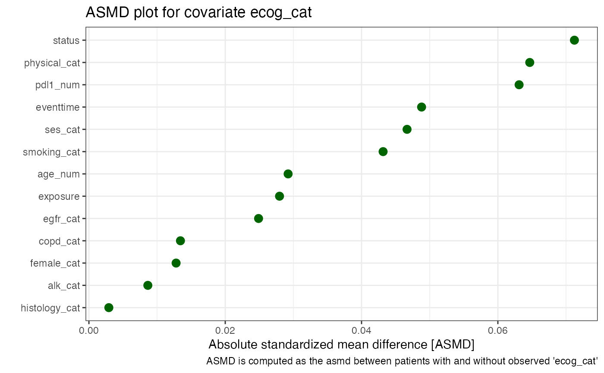
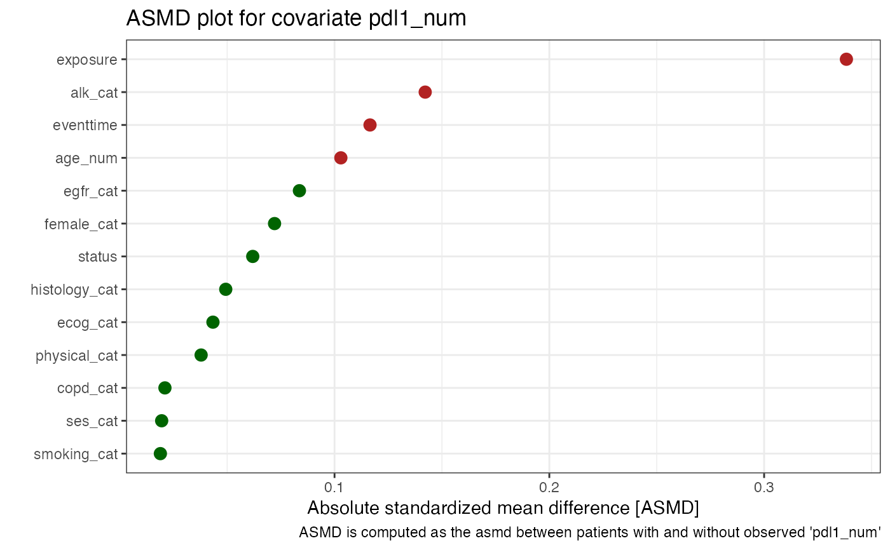

Computes mean/median absolute standardized mean differences between observed and missing observations
smdi_asmd.RdThis function takes a dataframe with covariates which are partially observed/missing and returns the median/average absolute standardized mean difference (asmd) and more details for every specified covariate in covar (if NULL all covariates with at least one NA are considered).
Important: don't include variables like ID variables, ZIP codes, dates, etc.
Arguments
- data
dataframe or tibble object with partially observed/missing variables
- covar
character covariate or covariate vector with partially observed variable/column name(s) to investigate. If NULL, the function automatically includes all columns with at least one missing observation and all remaining covariates will be used as predictors
- median
logical if the median (= TRUE; recommended default) or mean of all absolute standardized mean differences (asmd) should be computed
- includeNA
logical, should missingness of other partially observed covariates be explicitly modeled (default is FALSE)
Details
The asmd may be one indicator as to how much patient characteristics differ between patients with and without an observed value for a partially observed covariate. If the median/average asmd is above a certain threshold this may indicate imbalance in patient covariate distributions which may be indicative of the partially observed covariate following a missing at random (MAR) mechanims, i.e. the missingness is explainable by other observed covariates. Similarly, no imbalance between observed covariates may be indicative that missingness cannot be explained with observed covariates and the underlying missingness mechanism may be completely at random (MCAR) or not at random (e.g. missingness is only associated with unobserved factors or through the partially observed covariate itself).
A clear cut-off is hard to determine and analogues to propensity scores, some researchers have proposed that a standardized difference of 0.1 (10 per cent) denotes meaningful imbalance in the baseline covariate.
The asmd is computed for every covariate one-by-one and not jointly. If there is multivariate missingness, i.e. more than just one missing covariate exists, you can decide what should happen with the other partially observed 'predictor' covariates using the <includeNA> parameter. That is, if <includeNA> is set to FALSE (default), only the asmd between observed cases will be computed, and if <includeNA> is set to TRUE, missingness is modeled as an explicit category (categorical covariates only).
If any other behavior is desired, data transformations for example with the smdi_na_indicator function, may make sense
before calling the function.
The dataframe should generally consist of the exposure variable, the outcome variable(s), the partially observed covariates
and all other fully observed covariates which are deemed important for the final modeling
and (optionally) which could be considered as auxiliary variables. If no partially observed covariates are provided,
the function automatically looks for all variables/columns with NA (powered by the smdi_summarize function)
References
Austin PC. Balance diagnostics for comparing the distribution of baseline covariates between treatment groups in propensity-score matched samples. Stat Med. 2009 Nov 10;28(25):3083-107.
Normand SLT, Landrum MB, Guadagnoli E, Ayanian JZ, Ryan TJ, Cleary PD, McNeil BJ. Validating recommendations for coronary angiography following an acute myocardial infarction in the elderly: a matched analysis using propensity scores. Journal of Clinical Epidemiology. 2001;54:387–398.
Examples
library(smdi)
library(dplyr)
#>
#> Attaching package: ‘dplyr’
#> The following objects are masked from ‘package:stats’:
#>
#> filter, lag
#> The following objects are masked from ‘package:base’:
#>
#> intersect, setdiff, setequal, union
# S3 print method
asmd <- smdi_asmd(data = smdi_data)
asmd
#> $egfr_cat
#> $egfr_cat$asmd_covar
#> [1] "egfr_cat"
#>
#> $egfr_cat$asmd_table1
#> Stratified by egfr_cat_NA
#> 0 1 p test SMD
#> n " 1485" " 1015" "" "" ""
#> exposure (mean (SD)) " 0.32 (0.47)" " 0.51 (0.50)" "<0.001" "" " 0.393"
#> age_num (mean (SD)) "60.44 (13.80)" "61.58 (14.61)" " 0.048" "" " 0.080"
#> female_cat = 1 (%) " 457 (30.8) " " 465 (45.8) " "<0.001" "" " 0.313"
#> smoking_cat = 1 (%) " 608 (40.9) " " 645 (63.5) " "<0.001" "" " 0.465"
#> physical_cat = 1 (%) " 454 (30.6) " " 428 (42.2) " "<0.001" "" " 0.243"
#> alk_cat = 1 (%) " 27 ( 1.8) " " 42 ( 4.1) " " 0.001" "" " 0.137"
#> histology_cat = 1 (%) " 225 (15.2) " " 283 (27.9) " "<0.001" "" " 0.314"
#> ses_cat (%) " " " " " 0.039" "" " 0.103"
#> 1_low " 287 (19.3) " " 237 (23.3) " "" "" ""
#> 2_middle " 596 (40.1) " " 373 (36.7) " "" "" ""
#> 3_high " 602 (40.5) " " 405 (39.9) " "" "" ""
#> copd_cat = 1 (%) " 661 (44.5) " " 677 (66.7) " "<0.001" "" " 0.458"
#> eventtime (mean (SD)) " 2.17 (1.86)" " 2.15 (1.76)" " 0.816" "" " 0.010"
#> status (mean (SD)) " 0.79 (0.41)" " 0.84 (0.37)" " 0.001" "" " 0.132"
#> ecog_cat = 1 (%) " 539 (57.0) " " 433 (66.1) " "<0.001" "" " 0.189"
#> pdl1_num (mean (SD)) "44.07 (10.37)" "49.33 (11.31)" "<0.001" "" " 0.485"
#>
#> $egfr_cat$asmd_plot

#>
#> $egfr_cat$asmd_aggregate
#> # A tibble: 1 × 2
#> covariate asmd_median
#> <chr> <dbl>
#> 1 egfr_cat 0.243
#>
#>
#> $ecog_cat
#> $ecog_cat$asmd_covar
#> [1] "ecog_cat"
#>
#> $ecog_cat$asmd_table1
#> Stratified by ecog_cat_NA
#> 0 1 p test SMD
#> n " 1601" " 899" "" "" ""
#> exposure (mean (SD)) " 0.40 (0.49)" " 0.39 (0.49)" " 0.503" "" " 0.028"
#> age_num (mean (SD)) "61.05 (14.03)" "60.64 (14.34)" " 0.482" "" " 0.029"
#> female_cat = 1 (%) " 594 (37.1) " " 328 (36.5) " " 0.792" "" " 0.013"
#> smoking_cat = 1 (%) " 790 (49.3) " " 463 (51.5) " " 0.320" "" " 0.043"
#> physical_cat = 1 (%) " 547 (34.2) " " 335 (37.3) " " 0.131" "" " 0.065"
#> alk_cat = 1 (%) " 45 ( 2.8) " " 24 ( 2.7) " " 0.937" "" " 0.009"
#> histology_cat = 1 (%) " 326 (20.4) " " 182 (20.2) " " 0.985" "" " 0.003"
#> ses_cat (%) " " " " " 0.537" "" " 0.047"
#> 1_low " 346 (21.6) " " 178 (19.8) " "" "" ""
#> 2_middle " 612 (38.2) " " 357 (39.7) " "" "" ""
#> 3_high " 643 (40.2) " " 364 (40.5) " "" "" ""
#> copd_cat = 1 (%) " 853 (53.3) " " 485 (53.9) " " 0.779" "" " 0.013"
#> eventtime (mean (SD)) " 2.13 (1.80)" " 2.22 (1.86)" " 0.239" "" " 0.049"
#> status (mean (SD)) " 0.82 (0.39)" " 0.79 (0.41)" " 0.085" "" " 0.071"
#> egfr_cat = 1 (%) " 194 (20.5) " " 116 (21.5) " " 0.692" "" " 0.025"
#> pdl1_num (mean (SD)) "46.29 (11.07)" "45.59 (10.95)" " 0.179" "" " 0.063"
#>
#> $ecog_cat$asmd_plot

#>
#> $ecog_cat$asmd_aggregate
#> # A tibble: 1 × 2
#> covariate asmd_median
#> <chr> <dbl>
#> 1 ecog_cat 0.0292
#>
#>
#> $pdl1_num
#> $pdl1_num$asmd_covar
#> [1] "pdl1_num"
#>
#> $pdl1_num$asmd_table1
#> Stratified by pdl1_num_NA
#> 0 1 p test SMD
#> n " 1983" " 517" "" "" ""
#> exposure (mean (SD)) " 0.43 (0.50)" " 0.27 (0.45)" "<0.001" "" " 0.338"
#> age_num (mean (SD)) "60.60 (14.04)" "62.07 (14.47)" " 0.036" "" " 0.103"
#> female_cat = 1 (%) " 717 (36.2) " " 205 (39.7) " " 0.157" "" " 0.072"
#> smoking_cat = 1 (%) " 990 (49.9) " " 263 (50.9) " " 0.739" "" " 0.019"
#> physical_cat = 1 (%) " 707 (35.7) " " 175 (33.8) " " 0.476" "" " 0.038"
#> alk_cat = 1 (%) " 44 ( 2.2) " " 25 ( 4.8) " " 0.002" "" " 0.142"
#> histology_cat = 1 (%) " 411 (20.7) " " 97 (18.8) " " 0.354" "" " 0.049"
#> ses_cat (%) " " " " " 0.925" "" " 0.020"
#> 1_low " 413 (20.8) " " 111 (21.5) " "" "" ""
#> 2_middle " 772 (38.9) " " 197 (38.1) " "" "" ""
#> 3_high " 798 (40.2) " " 209 (40.4) " "" "" ""
#> copd_cat = 1 (%) " 1057 (53.3) " " 281 (54.4) " " 0.707" "" " 0.021"
#> eventtime (mean (SD)) " 2.20 (1.82)" " 1.99 (1.81)" " 0.019" "" " 0.117"
#> status (mean (SD)) " 0.80 (0.40)" " 0.83 (0.38)" " 0.217" "" " 0.062"
#> ecog_cat = 1 (%) " 779 (61.1) " " 193 (59.0) " " 0.523" "" " 0.043"
#> egfr_cat = 1 (%) " 252 (20.3) " " 58 (23.8) " " 0.258" "" " 0.084"
#>
#> $pdl1_num$asmd_plot

#>
#> $pdl1_num$asmd_aggregate
#> # A tibble: 1 × 2
#> covariate asmd_median
#> <chr> <dbl>
#> 1 pdl1_num 0.0619
#>
#>
#> attr(,"class")
#> [1] "asmd"
# let's look at the first variable
# we can check the complete covariate distribution
asmd$pdl1_num$asmd_table1
#> Stratified by pdl1_num_NA
#> 0 1 p test SMD
#> n " 1983" " 517" "" "" ""
#> exposure (mean (SD)) " 0.43 (0.50)" " 0.27 (0.45)" "<0.001" "" " 0.338"
#> age_num (mean (SD)) "60.60 (14.04)" "62.07 (14.47)" " 0.036" "" " 0.103"
#> female_cat = 1 (%) " 717 (36.2) " " 205 (39.7) " " 0.157" "" " 0.072"
#> smoking_cat = 1 (%) " 990 (49.9) " " 263 (50.9) " " 0.739" "" " 0.019"
#> physical_cat = 1 (%) " 707 (35.7) " " 175 (33.8) " " 0.476" "" " 0.038"
#> alk_cat = 1 (%) " 44 ( 2.2) " " 25 ( 4.8) " " 0.002" "" " 0.142"
#> histology_cat = 1 (%) " 411 (20.7) " " 97 (18.8) " " 0.354" "" " 0.049"
#> ses_cat (%) " " " " " 0.925" "" " 0.020"
#> 1_low " 413 (20.8) " " 111 (21.5) " "" "" ""
#> 2_middle " 772 (38.9) " " 197 (38.1) " "" "" ""
#> 3_high " 798 (40.2) " " 209 (40.4) " "" "" ""
#> copd_cat = 1 (%) " 1057 (53.3) " " 281 (54.4) " " 0.707" "" " 0.021"
#> eventtime (mean (SD)) " 2.20 (1.82)" " 1.99 (1.81)" " 0.019" "" " 0.117"
#> status (mean (SD)) " 0.80 (0.40)" " 0.83 (0.38)" " 0.217" "" " 0.062"
#> ecog_cat = 1 (%) " 779 (61.1) " " 193 (59.0) " " 0.523" "" " 0.043"
#> egfr_cat = 1 (%) " 252 (20.3) " " 58 (23.8) " " 0.258" "" " 0.084"